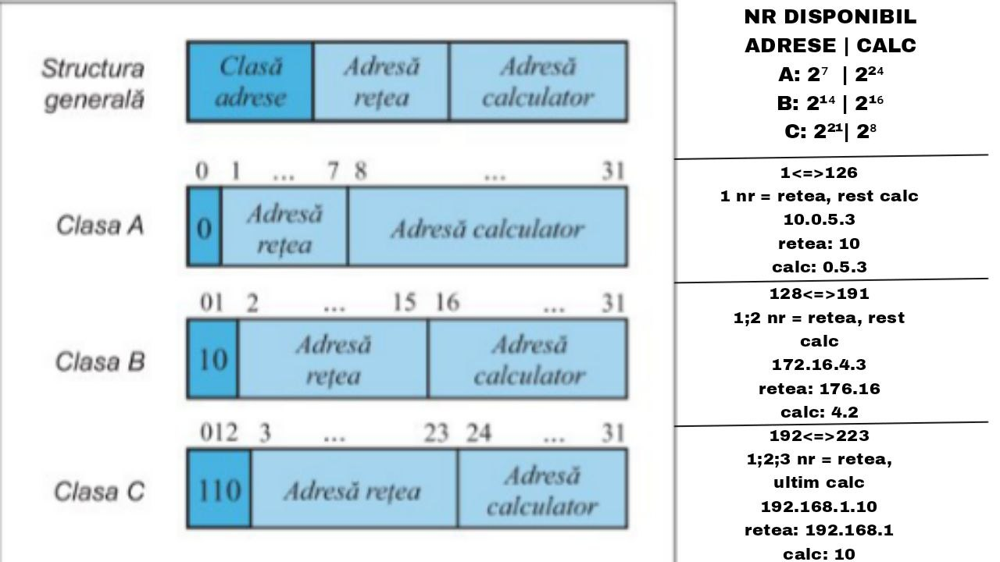
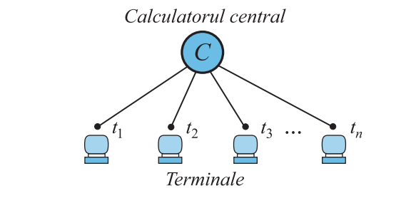
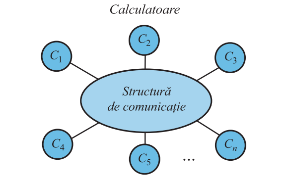
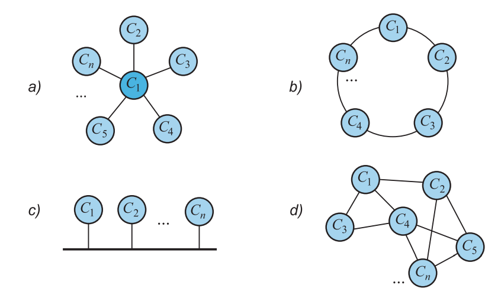
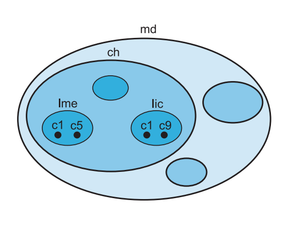

color: Schimbă culoarea textului
font-family: Setează tipul fontului
font-size: Dimensiunea textului
font-style: Folosit de obicei pentru italic
font-weight: Îngroșarea textului
text-align: Alinierea textului
text-decoration: Cel mai des folosit pentru a scoate sublinierile de la link-uri sau a adăuga sublinieri
background-color: Culoarea de fundal a unui element sau a întregii pagini
background-image: Inserarea unei imagini de fundal
width și height: Lățimea și înălțimea
border: Setează bordura dintr-o singură linie
Poate fi detaliat: border-width, border-style, border-color
margin: Spațiul din exteriorul bordurii
padding: Spațiul din interiorul bordurii, între conținut și margine
element: p/img/h2...
css: p{
color: purple
}
html: class="haha"
css: .haha{
color: red
}
html: id="titlu"
css: #titlu{
color: green;
}
se foloseste doar pe un element, trebuie sa fie unic
css: #test:hover{color:aqua;}
#id > .class > element
signed (normal): negativ si pozitiv, valori mai mici; unsigned: 0 si pozitive, vslori mai mari (duble)
int varsta = 18; -2,147,483,648 | 2,147,483,647
short x = 100; -32,768 | 32,767
long populatie = 1000000; -2,147,483,648 | 2,147,483,647
long long stele = 999999999; -9,223,372,036,854,775,808 | 9,223,372,036,854,775,807
float nota = 9.5f; -3.4e38 | 3.4e38
double pi = 3.141592; -1.7e308 | 1.7e308
long double x = 3.1415926535; -1.1e4932 | 1.1e4932
char litera = 'A'; -128 | 127
string nume = "Dragos";
bool online = true;
unsigned int bani = 500;
const int zile = 7;
auto pret = 19.99;
int note[3] = {10, 9, 8};
int* p = &x;
int* p = nullptr;
int& r = x;
enum Zi {Luni, Marti, Miercuri};
struct Elev {
string nume;
int varsta;
};
O adresă numerică este formată din 32 de cifre binare (4 octeţi)

Conectarea la un calculator central, de mare capacitate, a mai multe terminale
Fiabilitate redusă şi utilizarea ineficientă a resurselor de calcul
Reţea de calculatoare = o mulţime de calculatoare ce pot schimba informaţii prin intermediul unei structuri de comunicaţie.


Topologii de reţea:a – stea; b – inel; c – magistrală; d – distribuită
Topologie a reţelei = configuraţia geometrică a legăturilor dintre calculatoare.

c1.lic.ch.md | c5.lme.ch.md | c9.lic.ch.md